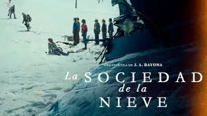

ADAPTABILIDAD
Los personajes aprenden a adaptarse a un entorno hostil y a encontrar recursos en condiciones adversas, mostrando la importancia de ser flexibles y creativos en situaciones de supervivencia.
"" >
TOMA DECICIONES DIFISILES
Los personajes se enfrentan a decisiones morales y éticas difíciles, como recurrir al canibalismo para sobrevivir. Esto plantea preguntas sobre la ética en situaciones extremas y muestra cómo las decisiones difíciles pueden ser necesarias para garantizar la supervivencia del grupo.
SACRIFICIO
La película ilustra cómo el amor puede manifestarse a través del sacrificio por los seres queridos. Los personajes están dispuestos a arriesgar sus propias vidas para salvar a otros, mostrando un amor desinteresado y altruista
LIDERAZGO COMPARTIDO
En ausencia de una autoridad centralizada, los sobrevivientes desarrollan un liderazgo compartido basado en la confianza y el respeto mutuo, lo que les permite tomar decisiones colectivas y mantener la cohesión del grupo.